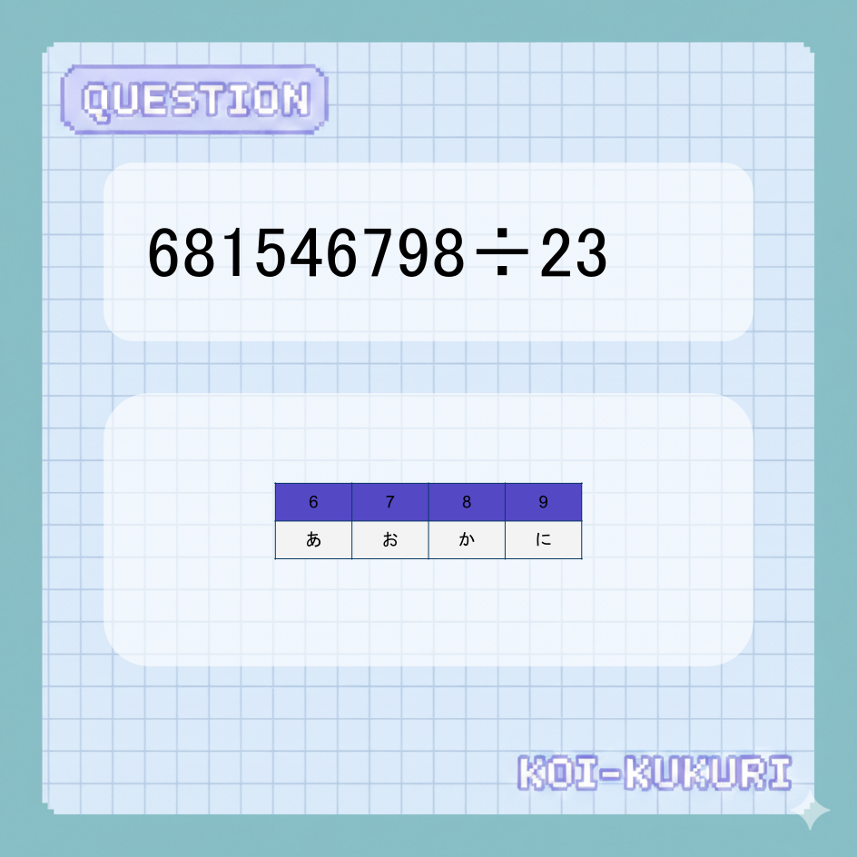

試練の石碑 #3 - 運命の問い
この謎は既に解き明かされています。（デザイン確認用ダミー）
これは、デザインとサイズの確認用ダミーです。 画像が表示されているか確認してください。

【協力謎】
この謎を解き明かした後、異性の参加者と協力プレイが可能です！
ヒントの所持状況 (交流のチャンス!)
1. 【男性限定】形と色の謎
3人が所持中
2. 【女性限定】音とリズムの謎
まだ誰も発見していません
正解後のレイアウト
🌸 協力プレイボーナス発生！
現在、パートナーを待っている人が 2名 います。（デモ）
あかり さん